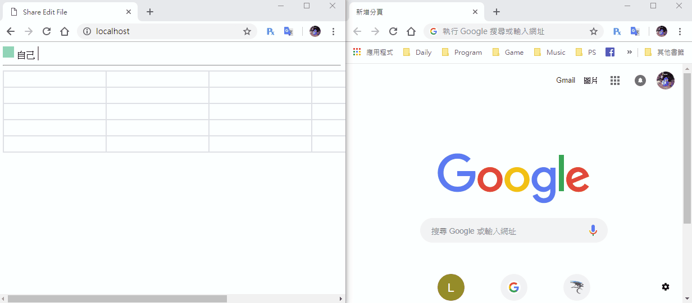
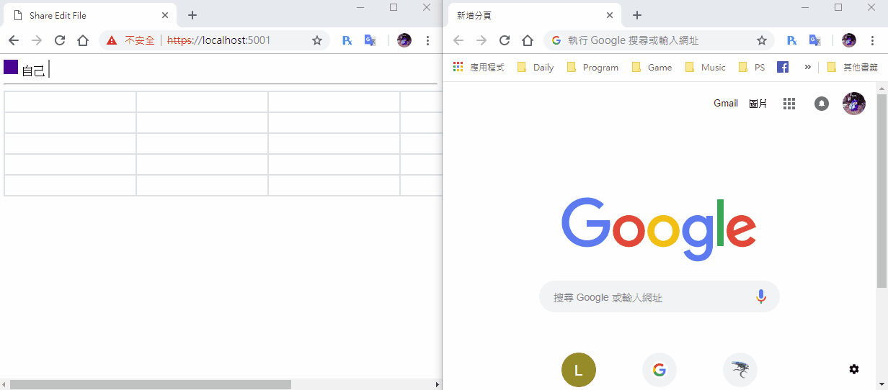
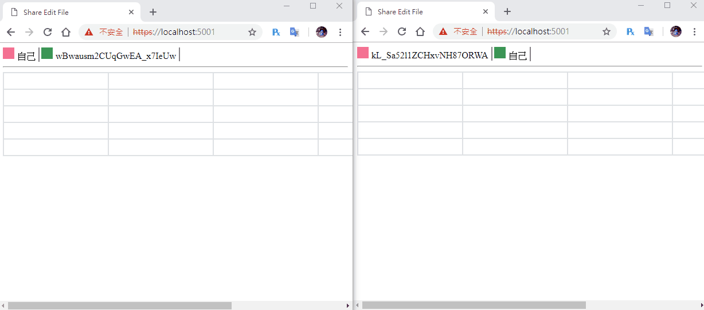

[鐵人賽Day25] 實作Web即時共同編輯文件 (5) - 一些小功能修正
文章目錄
今天是一些小地方的修正，其實做到這邊還有很多需要修正的地方，一個是重整後編輯中的顏色不會重新讀取，一個是編輯中關閉不會回船取消編輯，就是在編輯的人沒移開編輯中的cell，會造成沒回傳取消編輯的狀態，今天就來修正一下這些問題吧！
重整後重新讀取顏色
首先修改一下FileHub，傳回資料的順序修改一下，改成ReceiveUserList先傳在傳送ReceiveFile
public async Task GetFile(string fileName)
{
// 取得文件
var file = _service.GetFile(fileName);
// 加入使用者
_service.AddUser(fileName, Context.ConnectionId);
await Clients.All.SendAsync("ReceiveUserList", _service.GetUserList(fileName));
await Clients.Caller.SendAsync("ReceiveFile", file);
}
在來是前端建立表格時加入判斷，如果是就著色
connection.on("ReceiveFile", function (file) {
var count = 0;
for (var i = 0; i < file.row; i++) {
var row = document.createElement('tr');
for (var j = 0; j < file.column; j++) {
var cell = document.createElement('td');
cell.id = file.textList[count].cellName;
cell.addEventListener('click', cellEdit);
cell.addEventListener('input', change);
cell.appendChild(createCell(file.textList[count].text));
// 判斷是否為編輯中的表格
if (file.textList[count].editor != null)
cell.childNodes[0].style.background = document.getElementById(file.textList[count].editor).childNodes[0].style.backgroundColor
row.appendChild(cell);
count++;
}
table.append(row);
}
});
DEMO
因為換視窗時會取消編輯，所以我沒辦法用2個瀏覽器視窗DEMO，改架在IIS上，尤其他裝置連上內網一起操作，這邊我使用的裝置是ipad，ipad由於readonly會叫不出虛擬鍵盤，所以我有先拿掉，以下DEMO

避免編輯中關閉視窗
這邊可以依靠window的onbeforeunload事件來避免這問題，先創一個暫存編輯中cell id的變數editCell，然後再編輯時cellEdit丟入，最後呼叫onbeforeunload事件丟回取消事件。
var editCell;
function cellEdit() {
this.childNodes[0].readOnly = false;
this.childNodes[0].focus();
editCell = this.id;
}
window.onbeforeunload = function(){
connection.invoke('CancelEditText', 'TestFile', editCell).catch(function (err) {
return console.error(err.toString());
});
}
DEMO

延遲回傳編輯的資訊
正常來說每打一個字或是刪除一個字都在回傳，這樣實在太消耗Server資源，所以我們應該要延遲一小段時間在回傳，最簡單的方法就是使用lodash的debounce來完成這項工作
安裝lodash
首先引用CDN
<script src="https://cdn.jsdelivr.net/npm/lodash@4.17.11/lodash.min.js"></script>
使用debounce()方法來延遲傳回去的時間，lodash預設變數是_，所以我們要這樣呼叫_.debounce()，debounce還能設定延遲幾毫秒，我們設定延遲300毫秒傳回，然後寫在cell的input事件裡就行，在connection.on("ReceiveFile")裡面，第一個參數塞進要執行的function，第二個則是延遲的時間
cell.addEventListener('input', _.debounce(change, 300));
DEMO

讀取文件換成變數
因為我們下一篇要來做自訂的文件，不一定都是讀取測試文件，所以要把文件名稱換成變數拉出來，使用取代的方式就行Ctrl+F左側箭頭按下去，把'TestFile'取代成LoadFile，然後新增一個LoadFile變數
var LoadFile = 'TestFile';
今天就這樣，明天來做多文件選擇和建立文件吧！